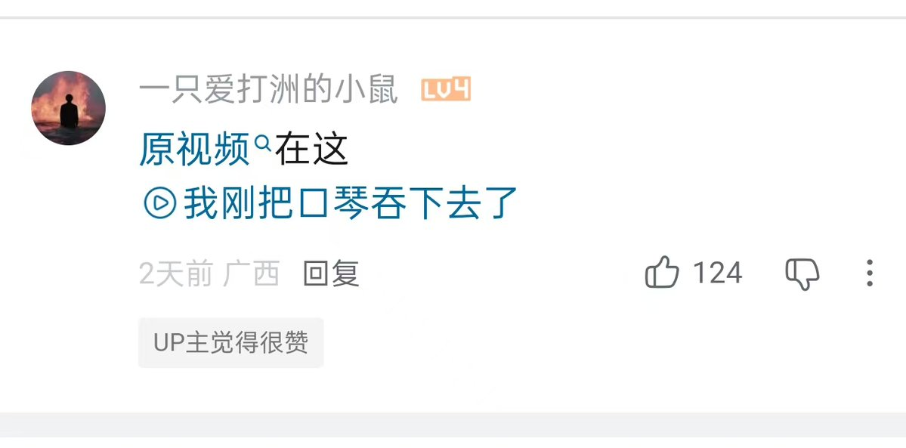
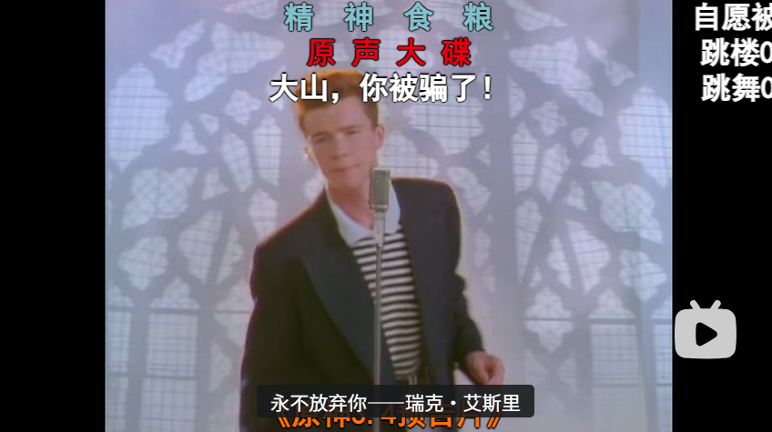
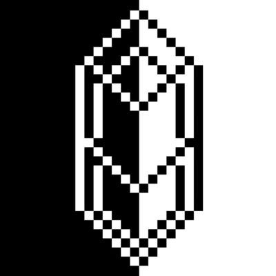

Akiramenai💫
@Ak1raQ_love
@suishoucrystal 这不路径穿越吗



水晶クリスタル
@suishoucrystal
B站现在出现了一种很高明的骗人点《Never gonna give you up》（瑞克摇）链接的方法。
传统骗术是把视频链接伪装成语音评论（B站压根没这玩意）或视频的时间跳转（太容易被识破）。
现在的骗术是把链接伪装成和当前视频相关的视频跳转链接，实际上点进去会跳转到瑞克摇。方法是发送 https://t.co/dsja6ESoXK